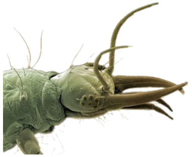

Tema 7. Órganos de ingestión

• Cavidad preoral, estomodeo y lóbulos cefálicos
• Aparato de ingestión ortopteroide
• Órganos de ingestión de neurópteros
• Órganos de ingestión de coleópteros
• Órganos de ingestión de himenópteros
• Órganos de ingestión de lepidópteros
• Órganos de ingestión de dípteros
• Órganos de ingestión de hemípteros y homópteros
• Órganos de ingestión de tisanópteros
Capítulo 12. Los órganos de ingestión (texto)
Presentación. Órganos de ingestión